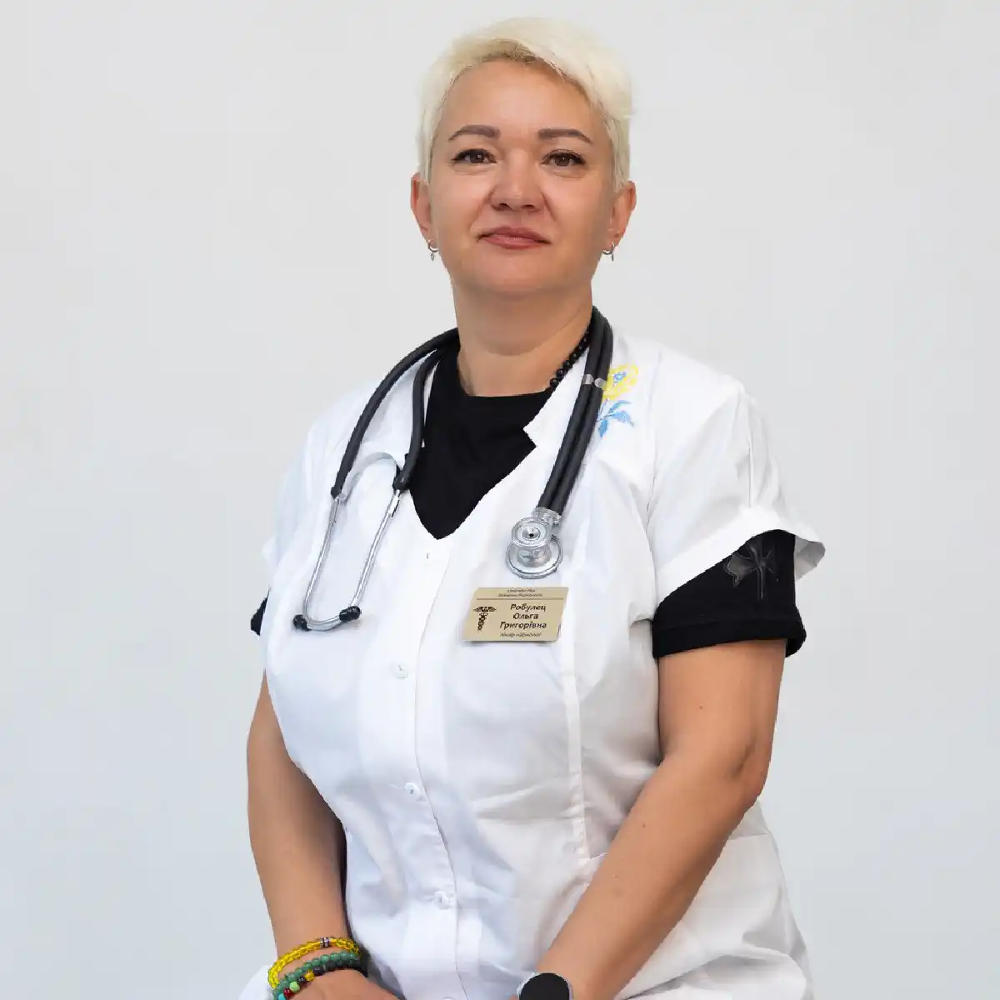

+38(068) 79 72 782
+38(068) 79 72 782Лікування наркотичної залежності у Харкові
Зроби крок до життя без наркотиків


Безкоштовна консультація, працюємо цілодобово 24/7
Зроби крок до життя без наркотиків

Дата написання: 5 вер. 2025 р.
Останнє оновлення: 8 жовт. 2026 р.
Наркотична залежність впливає не лише на фізичне здоров’я, а й на психічний стан, поведінку, стосунки з близькими, роботу та здатність контролювати вживання психоактивних речовин. Чим довше зберігається залежність, тим вищий ризик інтоксикацій, передозування, тяжкої абстиненції та повторних зривів. Лікування наркоманії в Харкові починається з оцінки стану пацієнта та визначення речовин, які він вживає. Залежно від ситуації допомога може включати консультацію нарколога, детоксикацію, лікування абстинентного синдрому, стаціонарне спостереження, психотерапію та реабілітацію. При втраті свідомості, судомах, тяжкому збудженні або пригніченні дихання потрібна екстрена медична допомога.
Наркоманія — це залежність від психоактивних речовин, при якій людині стає важко контролювати вживання попри негативні наслідки. Приводом звернутися по допомогу можуть бути збільшення дози, постійний потяг, поява абстинентного синдрому, повторні інтоксикації, погіршення здоров’я, конфлікти з близькими та неможливість самостійно припинити вживання. У міру розвитку залежності людина дедалі більше часу та ресурсів витрачає на отримання речовини, її вживання та відновлення після нього. Поступово страждають робота, стосунки, сон, харчування та емоційний стан. Своєчасне лікування наркотичної залежності дає змогу працювати не лише з фізичними наслідками вживання, а й із причинами повторних зривів.
Ознаки залежності відрізняються залежно від речовини, але існують загальні прояви. Людина починає дедалі більше часу витрачати на пошук, вживання та відновлення після наркотиків. Може зростати толерантність, коли для досягнення звичного ефекту потрібна більша доза. При припиненні вживання з’являються неприємні фізичні або психічні симптоми. Також можливі зміни кола спілкування, втрата інтересу до колишніх занять, порушення сну, настрою та працездатності. Насторожити мають повторні спроби відмовитися від речовини, які закінчуються поверненням до вживання. Ще однією важливою ознакою є продовження прийому наркотика навіть після серйозних проблем зі здоров’ям або в сім’ї.
Родичів можуть насторожити різкі зміни поведінки, незвична сонливість або збудження, порушення сну, незрозумілі перепади настрою та часті зникнення з дому. Іноді змінюються апетит, вага, мовлення, координація, розмір зіниць або зовнішній вигляд. Можуть з’явитися незрозумілі фінансові труднощі, потайливість, зниження інтересу до роботи або навчання. Однак окремий симптом не доводить вживання наркотиків. Подібні зміни можуть мати й інші причини. При підозрі краще обговорити ситуацію з фахівцем та за необхідності пройти тест на наркотики, а результат оцінювати разом із клінічною картиною.
Прояви залежать від конкретної речовини. Опіоїди можуть викликати виражену сонливість і пригнічення дихання, стимулятори — тахікардію, підвищення тиску, тривогу та збудження. Канабіноїди можуть супроводжуватися порушенням координації, тривогою та зміною сприйняття. Седативні препарати здатні викликати загальмованість, хитку ходу та порушення свідомості. Також можливі сухість у роті, пітливість, зміна температури тіла, нудота, блювання та порушення сну. При виражених симптомах необхідна наркологічна допомога, а при порушенні дихання, втраті свідомості або судомах — екстрена медична допомога.
Деякі люди дійсно припиняють вживання самостійно, але при сформованій залежності зробити це значно складніше. Проблемою стає не лише фізична абстиненція, а й сильний психологічний потяг, звичне оточення, стрес та високий ризик повторного вживання. У частини пацієнтів після відмови з’являються безсоння, тривога, знижений настрій та виражене бажання знову прийняти речовину. Особливо небезпечно різко припиняти деякі седативні препарати після тривалого регулярного вживання. Тому безпечну тактику краще визначити разом із лікарем.
Звернення до фахівця бажане, якщо людина не здатна самостійно контролювати вживання, збільшує дозу або відчуває симптоми відміни. Також консультація необхідна після повторних інтоксикацій, передозування або невдалих спроб відмовитися від наркотиків. Чим раніше проводиться оцінка стану, тим простіше визначити ризики та підібрати відповідний формат допомоги. Почати можна з консультації нарколога, навіть якщо пацієнт поки не готовий до тривалої програми лікування.
Консультація нарколога в Харкові дає змогу оцінити характер вживання, фізичний та психічний стан пацієнта і можливі ризики. Лікар уточнює, які речовини вживалися, як часто і в яких дозах, коли був останній прийом, чи були передозування та попередні спроби лікування. Також важливо повідомити про вживання алкоголю, снодійних, транквілізаторів та інших препаратів, оскільки поєднання речовин може значно змінити ризики. Після цього визначається подальша тактика: допомога вдома, детоксикація, стаціонар, психотерапія або реабілітаційна програма.
Лікування починається не з однієї універсальної процедури, а з діагностики поточного стану. Важливо визначити основну речовину, наявність поєднаного вживання, симптоми інтоксикації або відміни та супутні захворювання. Лікар також оцінює попередній досвід лікування, наявність зривів та готовність пацієнта продовжувати терапію після фізичної стабілізації. Після первинного огляду складається індивідуальний план лікування залежності від наркотиків, який може включати кілька послідовних етапів.
Обсяг обстеження визначається станом пацієнта. Можуть знадобитися лабораторні дослідження крові та сечі, оцінка функції печінки та нирок, електролітів та інших показників. За необхідності проводиться ЕКГ і призначаються додаткові обстеження. Аналізи особливо важливі при тривалому вживанні кількох речовин, наявності хронічних захворювань або вираженому погіршенні стану. Результати допомагають лікарю оцінити наслідки вживання та безпечніше підібрати подальше лікування.
Детоксикація від наркотиків використовується для стабілізації фізичного стану після вживання або в період відміни. Вона може включати медичне спостереження, корекцію зневоднення та електролітних порушень, а також симптоматичне лікування за показаннями. Тривалість детоксикації залежить від речовини, дози, тривалості вживання та загального стану пацієнта. Важливо розуміти, що детоксикація не усуває психологічну залежність. Після стабілізації необхідно продовжити роботу з потягом та профілактикою зриву.
Крапельниця від наркотиків призначається не автоматично після будь-якого вживання, а лише за наявності медичних показань. Інфузійна терапія може знадобитися при зневодненні та деяких інших порушеннях, які лікар виявляє під час огляду. Склад та обсяг інфузії підбираються індивідуально з урахуванням тиску, пульсу, стану нирок, серця та інших факторів. При тяжкій інтоксикації або передозуванні звичайна крапельниця не замінює екстрене лікування та спостереження.
Абстинентний синдром виникає після припинення або значного зменшення вживання речовини, до якої сформувалася фізична залежність. Симптоми залежать від конкретного наркотику та можуть включати тривогу, безсоння, біль, пітливість, нудоту, діарею, тремор та виражене погіршення самопочуття. У деяких пацієнтів ломка супроводжується різкими змінами настрою та сильним потягом до повторного вживання. Лікування ломки від наркотиків проводиться з урахуванням виду речовини, тяжкості симптомів та загального стану пацієнта.
Деякі стани можна оцінювати та лікувати амбулаторно або вдома, якщо пацієнт стабільний і відсутній високий ризик ускладнень. Домашній формат не підходить при тяжкій інтоксикації, порушенні свідомості, судомах, вираженому психозі, пригніченні дихання та інших небезпечних симптомах. Також стаціонар може бути кращим, якщо людина вживала кілька речовин одночасно або вдома неможливо забезпечити безпечне спостереження. Лікар після огляду визначає, чи можливе лікування наркоманії вдома, чи безпечніше госпіталізувати пацієнта.
Нарколог додому в Харкові може провести первинний огляд пацієнта, оцінити симптоми та визначити подальшу тактику. Такий формат може бути зручним після вживання наркотиків, при абстиненції або коли людина не готова самостійно приїхати до клініки. Під час візиту лікар уточнює вживану речовину, час останнього прийому, наявність хронічних захворювань та оцінює основні показники стану. Якщо домашнє лікування небезпечне, лікар рекомендує стаціонар або екстрену госпіталізацію.
Стаціонарне спостереження необхідне при тяжкій інтоксикації, вираженому синдромі відміни, психозі, повторних судомах, порушенні свідомості та високому ризику ускладнень. Також стаціонар може бути кращим при одночасному вживанні кількох речовин та серйозних супутніх захворюваннях. В умовах клініки простіше контролювати стан пацієнта в динаміці та своєчасно реагувати на погіршення. Наркологічний стаціонар дає змогу цілодобово спостерігати за пацієнтом та коригувати терапію за необхідності.
До опіоїдів належать героїн, метадон, фентаніл, бупренорфін, трамадол та інші речовини. Опіоїдна інтоксикація особливо небезпечна можливим пригніченням дихання. Тривожними ознаками є неможливість розбудити людину, рідкісне або поверхневе дихання, виражена сонливість та втрата свідомості. Ризик особливо зростає при поєднанні опіоїдів з алкоголем, бензодіазепінами або іншими седативними речовинами. Допомога після вживання опіоїдів залежить від стану пацієнта та не повинна обмежуватися інфузією при підозрі на передозування.
Лікування залежності від опіоїдів включає кілька етапів: оцінку стану, безпечне лікування синдрому відміни та подальшу протирецидивну терапію. Підхід залежить від уживаної речовини, тривалості залежності та попереднього лікування. Пацієнту може знадобитися як медична стабілізація, так і тривала психотерапевтична та реабілітаційна підтримка. Після періоду утримання толерантність може знижуватися, тому повернення до попередньої дози особливо небезпечне через ризик передозування.
До психостимуляторів належать амфетамін, метамфетамін, кокаїн та низка синтетичних стимуляторів. Вживання може супроводжуватися безсонням, тахікардією, підвищенням тиску, тривогою, панікою, дратівливістю та виснаженням. Після припинення можуть з’являтися слабкість, сонливість, зниження настрою та сильний психологічний потяг. Лікування залежності від психостимуляторів зазвичай поєднує медичну допомогу при гострих станах та подальшу психотерапевтичну роботу.
Після стимуляторів можливі виражене серцебиття, стрибки тиску, біль у грудях, тривога, паніка та тривале безсоння. Деякі пацієнти відчувають підозрілість, дратівливість або виражене психомоторне збудження. При болю в грудях, вираженій задишці, судомах, втраті свідомості або тяжкому збудженні необхідна екстрена допомога. При стабільному стані крапельниця після психостимуляторів може використовуватися лише після огляду та за наявності відповідних показань.
Синтетичні стимулятори можуть викликати сильний психологічний потяг, тривале безсоння, тривогу, підозрілість та виражене збудження. Після тривалого вживання іноді з’являються психотичні симптоми, дезорієнтація та небезпечна поведінка. При регулярному вживанні погіршуються сон, настрій, концентрація уваги та здатність контролювати потяг. Лікування залежності від Альфа-PVP та солей потребує оцінки як фізичного, так і психічного стану пацієнта.
Після MDMA можливі підвищення температури, прискорене серцебиття, тривога, порушення сну та водно-електролітні розлади. Тяжке погіршення стану після вживання потребує термінової медичної оцінки. Після повторного вживання можуть зберігатися тривожність, порушення сну, знижений настрій та бажання знову прийняти речовину. При сформованій залежності лікування залежності від екстазі (МДМА) включає не лише допомогу після вживання, а й роботу з повторним вживанням та психологічним потягом.
Канабіс може викликати тривогу, панічні реакції, порушення сприйняття та координації. Синтетичні канабіноїди Spice/K2 здатні викликати більш непередбачувані та тяжкі реакції. При вираженій сплутаності свідомості, судомах або тяжкому збудженні необхідна термінова допомога. При регулярному вживанні в деяких людей формується психологічна залежність, знижується мотивація та порушується звичний режим життя. Лікування залежності від марихуани та канабісу зазвичай спрямоване насамперед на зміну поведінки та роботу з психологічною залежністю.
ЛСД належить до класичних галюциногенів, а кетамін і фенциклідин мають виражену дисоціативну дію. Інтоксикація може супроводжуватися зміною сприйняття, дезорієнтацією, панікою та небезпечною поведінкою. Після повторного вживання можуть зберігатися порушення настрою, пам’яті, концентрації уваги та психологічний потяг. Лікування залежності від кетаміну та фенциклідину потребує оцінки характеру вживання, психічного стану та наслідків для здоров’я.
Бензодіазепіни та барбітурати пригнічують центральну нервову систему та можуть формувати фізичну залежність. Різка відміна після регулярного тривалого вживання здатна супроводжуватися тяжкою абстиненцією, включаючи судоми. Особливо небезпечне поєднання цих препаратів з алкоголем, опіоїдами та іншими речовинами, що пригнічують дихання. Тому лікування залежності від бензодіазепінів та барбітуратів має проводитися під медичним контролем, а схема припинення вживання визначається індивідуально.
Залежність може формуватися не лише від нелегальних наркотиків, а й від лікарських засобів при немедичному вживанні. Прегабалін, деякі седативні препарати та інші ліки можуть викликати толерантність, психологічну або фізичну залежність. Особливе значення має поєднання таких препаратів з алкоголем, опіоїдами або транквілізаторами. Лікування залежності від прегабаліну починається з оцінки доз, тривалості вживання та поєднання з іншими речовинами.
Передозування може проявлятися втратою свідомості, порушенням дихання, судомами, вираженою сплутаністю свідомості, тяжким збудженням або порушенням серцевого ритму. У таких ситуаціях не можна чекати планового приїзду нарколога або розраховувати на домашню крапельницю. Особливо небезпечною є ситуація, коли невідомо, яку речовину було прийнято, або людина вживала одразу кілька препаратів. Необхідно викликати екстрену медичну допомогу та повідомити, яку речовину, імовірно, було вжито.
Термінова госпіталізація може знадобитися при неможливості розбудити людину, пригніченні дихання, судомах, втраті свідомості, вираженому болю в грудях, тяжкому психозі або небезпечному збудженні. Особливо високий ризик виникає при змішуванні кількох речовин, наприклад опіоїдів з алкоголем або седативними препаратами. Також небезпечні виражена дезорієнтація, різкі зміни поведінки та стан, за якого людина може завдати шкоди собі або оточенню. У таких ситуаціях пріоритетом є допомога при передозуванні наркотиками, а не планова детоксикація.
Налоксон використовується при підозрі на передозування опіоїдами, особливо при вираженому пригніченні дихання та свідомості. Його застосування не скасовує необхідності звернення по екстрену медичну допомогу, оскільки дія деяких опіоїдів може тривати довше за дію налоксону. Після введення препарату можливе повторне погіршення стану, тому спостереження залишається необхідним. Навіть якщо людина швидко прийшла до тями, медична оцінка все одно потрібна.
Психотерапія при наркотичній залежності допомагає працювати з психологічним потягом, стресовими ситуаціями та звичками, пов’язаними з вживанням. Пацієнт вчиться розпізнавати ситуації високого ризику, формувати нові стратегії поведінки та звертатися по допомогу до виникнення зриву. Під час терапії також можуть обговорюватися проблеми в сім’ї, емоційні труднощі та фактори, які раніше провокували вживання. Психотерапія зазвичай проводиться після стабілізації фізичного стану та може тривати протягом тривалого часу.
Якщо людина відмовляється лікуватися, родичі можуть почати з консультації фахівця. Мотиваційна бесіда із залежним спрямована на те, щоб допомогти пацієнту побачити наслідки вживання та самостійно прийняти рішення про початок лікування. Фахівець намагається зрозуміти причини відмови та обговорює з людиною ті проблеми, які є найбільш значущими саме для неї. Тиск, погрози та спроби таємного лікування зазвичай не формують стійкої мотивації.
Реабілітація наркозалежних у Харкові може стати наступним етапом після детоксикації та стабілізації стану. Реабілітаційна програма спрямована на профілактику повторного вживання, відновлення соціальних навичок та формування стійкої тверезості. Під час відновлення пацієнт поступово повертається до звичного режиму життя, вчиться справлятися зі стресом та розпізнавати ознаки наближення зриву. Особливо актуальна реабілітація при тривалій залежності, повторних зривах та неможливості зберігати відмову від наркотиків після короткочасного лікування.
Відновлення зазвичай займає більше часу, ніж безпосередньо детоксикація. Після припинення вживання можуть зберігатися порушення сну, тривога, знижений настрій, слабкість та потяг. Швидкість відновлення залежить від речовини, тривалості вживання, стану здоров’я та способу життя пацієнта. Важливо дотримуватися рекомендацій лікаря, поступово відновлювати сон і харчування, продовжувати психотерапію та уникати ситуацій, пов’язаних із попереднім вживанням.
Зрив рідко виникає раптово. Йому можуть передувати стрес, повернення до звичної компанії, безсоння, сильний потяг або відмова від подальшої терапії. Профілактика включає регулярну роботу з фахівцем, зміну оточення та своєчасне звернення по допомогу при появі бажання знову вжити наркотик. Корисно заздалегідь визначити ситуації високого ризику та способи реагування на них. Після лікування важливо мати конкретний план дій на випадок посилення потягу.
Пацієнтів та родичів часто цікавить конфіденційність звернення. Анонімне лікування наркоманії в Харкові передбачає максимально конфіденційний формат допомоги в межах правил конкретного медичного закладу та чинних вимог до медичної документації. Можна заздалегідь уточнити, які дані необхідні для звернення та яким чином зберігається інформація про лікування. Перед початком терапії також варто дізнатися порядок видачі медичних документів, якщо вони знадобляться пацієнту.
Тривалість залежить від речовини, тривалості залежності, фізичного та психічного стану пацієнта та обраної програми. Гостра детоксикація може займати відносно короткий час, але повноцінне лікування залежності зазвичай значно довше. Чим вираженіший психологічний потяг і чим більше було попередніх зривів, тим триваліша підтримка може знадобитися. Психотерапія, реабілітація та профілактика зриву можуть тривати місяцями, оскільки головне завдання — не лише припинити вживання, а й зберегти результат.
Вартість лікування наркоманії в Харкові починається від 2499 грн.
Цілодобова наркологічна допомога в Харкові може знадобитися після вживання наркотиків, при вираженій абстиненції або різкому погіршенні стану. При стабільному стані можливий огляд нарколога та визначення подальшої тактики. Нічний або терміновий виклик особливо актуальний, якщо симптоми з’явилися раптово і родичам складно оцінити ступінь небезпеки. При втраті свідомості, порушенні дихання, судомах, тяжкому збудженні або інших загрозливих симптомах необхідно негайно звертатися по екстрену медичну допомогу.
Почати лікування можна з консультації нарколога в Харкові, під час якої фахівець оцінить уживані речовини, стан пацієнта та необхідність детоксикації або стаціонару. При відносно стабільному стані можлива допомога амбулаторно або вдома. При тяжкій інтоксикації, вираженій ломці або психічних порушеннях може знадобитися лікування в наркологічному стаціонарі. Після стабілізації важливо продовжити комплексне лікування: психотерапію, реабілітацію та профілактику зриву. Саме поєднання медичної допомоги та подальшої роботи із залежністю дає змогу боротися не лише з наслідками вживання, а й із причинами повторного повернення до наркотиків.
Телефон для консультації та виклику нарколога додому в Харкові: +38(050-021-69-57)

Статтю перевірено експертом
Робулець Ольга
Лікар-нарколог, ординатор
Можливо цікава стаття:
Налоксон та екстрена допомога при передозуванні опіоїдів

Так, ми суворо дотримуємося повної конфіденційності на всіх етапах лікування. Інформація про пацієнта, діагноз та проходження терапії не передається третім особам. Звернення до нас не тягне за собою постановку на облік. Ви можете бути впевнені у безпеці та анонімності.
Програма лікування розробляється індивідуально після консультації з фахівцем. Враховуються вид залежності, її тривалість, фізичний та психологічний стан пацієнта. Такий підхід дозволяє підвищити ефективність терапії та знизити ризик зриву. Ми не використовуємо шаблонні рішення.
Так, ми супроводжуємо пацієнтів і після основного курсу лікування. Проводяться консультації, рекомендації щодо адаптації та профілактики рецидивів. За потреби можлива подальша психологічна підтримка. Це допомагає зберегти результат та повернутися до повноцінного життя.
Анонимно

Помогли при наркотической зависимости
Номер телефону:
+380 (68) 797 27 82
+380 (50) 021 69 57
Адресу наркологічного центра вашого міста уточнюйте за
телефоном
Працюємо: Київ, Одеса, Львів, Харків, Дніпро, Запоріжжя,
Черкасах, Чугуєві, Чорноморську, Кам'янському
Telegram: t.me/umbrellaplus
Графік работы: Цілодобово